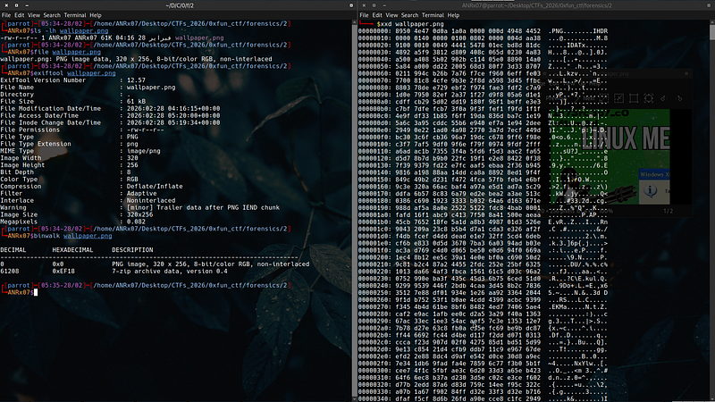
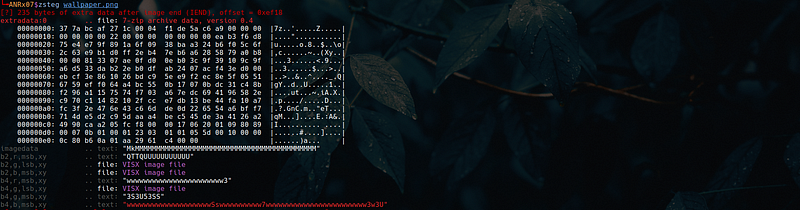

Forensics Challenge
Hidden 7z Archive in PNG
File tampering investigation — extracting a hidden 7z archive from a PNG image using steganography analysis, metadata inspection, and data carving techniques
Challenge Scenario
Challenge Subject:
The interception of a transmission has occurred, with only a network capture remaining. Recover the flag before the trail goes cold.
Challenge File:
The interception of a transmission has occurred, with only a network capture remaining. Recover the flag before the trail goes cold.
Challenge File:
wallpaper.png
1. Initial Analysis
The first thing I did was gather information about the PNG file using various forensic tools:
└╼$ ls -lh wallpaper.png
└╼$ file wallpaper.png
└╼$ exiftool wallpaper.png
└╼$ xxd wallpaper.png
└╼$ binwalk wallpaper.png
Key Finding
ExifTool Warning:
Warning: [minor] Trailer data after PNG IEND chunk
Analysis:
This indicates the presence of extraneous or appended data beyond the logical end of the PNG file structure.
In the PNG format, the
This indicates the presence of extraneous or appended data beyond the logical end of the PNG file structure.
In the PNG format, the
IEND chunk represents the official termination of the image
data stream. Any bytes located after this chunk are not part of the legitimate
image rendering structure and may indicate:
- Hidden data
- Steganography content
- File tampering
2. Steganography Analysis with zsteg
I used the zsteg tool to analyze the hidden data inside the image:
└╼ANRx07$ zsteg wallpaper.png
[?] 235 bytes of extra data after image end (IEND), offset = 0xef18
extradata:0 .. file: 7-zip archive data, version 0.4
00000000: 37 7a bc af 27 1c 00 04 f1 de 5a c6 a9 00 00 00 |7z..'.....Z.....|
00000010: 00 00 00 00 22 00 00 00 00 00 00 00 ea b3 f6 d8 |...."...........|
00000020: 75 e4 e7 9f 89 1a 6f 09 38 ba a3 24 b6 f0 5c 6f |u.....o.8..$..\o|
00000030: 2c 63 e9 b1 d0 ff 2e b4 7e b6 a6 28 58 79 a0 b8 |,c......~..(Xy..|
00000040: 00 00 81 33 07 ae 0f d0 0e b0 3c 9f 39 10 9c 9f |...3......<.9...|
00000050: a6 d5 33 da b2 2e b0 df ab 24 07 ac f4 3e d0 00 |..3......$...>..|
00000060: eb cf 3e 86 10 26 bd c9 5e e9 f2 ec 8e 5f 05 51 |..>..&..^...._.Q|
00000070: 67 59 ef f0 64 a4 bc 55 0b 17 07 0b dc 31 c4 8b |gY..d..U.....1..|
00000080: f2 96 a1 15 75 74 f7 03 a6 7e dc 69 41 96 58 2e |....ut...~.iA.X.|
00000090: c9 70 c1 14 82 10 2f cc e7 db 13 be 44 fa 10 a7 |.p..../.....D...|
000000a0: fc 3f 2e 47 6e 43 c6 6d de 0d 22 65 54 a6 bf f7 |.?.GnC.m.."eT...|
000000b0: 71 4d e5 d2 c9 5d aa a4 be c5 45 de 3a 41 26 a2 |qM...]....E.:A&.|
000000c0: 49 90 ca a2 05 fc f8 00 00 17 06 20 01 09 80 89 |I.......... ....|
000000d0: 00 07 0b 01 00 01 23 03 01 01 05 5d 00 10 00 00 |......#....]....|
000000e0: 0c 80 b6 0a 01 aa 29 61 c4 00 00 |......)a... |
imagedata .. text: "MkMMMMMMMMMMMMMMMMMMMMMMMMMMMMMMMMMMMMMMMMMMM"
b2,r,msb,xy .. text: "QTTQUUUUUUUUUUU"
b2,g,lsb,xy .. file: VISX image file
b2,b,msb,xy .. file: VISX image file
b4,r,msb,xy .. text: "wwwwwwwwwwwwwwwwwwwwwww3"
b4,g,lsb,xy .. file: VISX image file
b4,g,msb,xy .. text: "3S3U53SS"
b4,b,msb,xy .. text: "wwwwwwwwwwwwwwwwwwwwSswwwwwwwwww7wwwwwwwwwwwwwwwwwwwwwwww3w3U"
Discovery:
Based on the zsteg results, the PNG file is not only an image. There is hidden appended data, and this data appears to be a 7z archive.
Based on the zsteg results, the PNG file is not only an image. There is hidden appended data, and this data appears to be a 7z archive.
3. Extracting Hidden Archive
I extracted the hidden data using the offset value 0xef18 identified
by zsteg:
└──╼ $ dd if=wallpaper.png of=secret.7z bs=1 skip=$((0xef18))
235+0 records in
235+0 records out
235 bytes copied, 0.00520128 s, 45.2 kB/s
Command Breakdown:
dd— Data duplication toolif=wallpaper.png— Input fileof=secret.7z— Output filebs=1— Block size of 1 byteskip=$((0xef18))— Skip to offset 0xef18 (61208 in decimal)
This created a new file called secret.7z.
4. Password Discovery
The secret.7z file was password protected. After reviewing the image
again, I found hidden text:
Password Found:
1n73rc3p7_c0nf1rm3d
This turned out to be the password for the 7z archive.
5. Extracting the Flag
┌─[ANRx07@parrot]─[~/Desktop/CTFs_2026/0xfun_ctf/forensics/2]
└──╼ $ 7z x secret.7z
7-Zip [64] 16.02 : Copyright (c) 1999-2016 Igor Pavlov : 2016-05-21
p7zip Version 16.02 (locale=C.UTF-8,Utf16=on,HugeFiles=on,64 bits,8 CPUs Intel(R) Core(TM) i5-8365U CPU @ 1.60GHz (806EC),ASM,AES-NI)
Scanning the drive for archives:
1 file, 235 bytes (1 KiB)
Extracting archive: secret.7z
--
Path = secret.7z
Type = 7z
Physical Size = 235
Headers Size = 203
Method = LZMA2:12 7zAES
Solid = -
Blocks = 1
Enter password (will not be echoed): ********
Everything is Ok
Folders: 1
Files: 1
Size: 27
Compressed: 235
┌─[ANRx07@parrot]─[~/Desktop/CTFs_2026/0xfun_ctf/forensics/2]
└──╼ $ ls
fishwithwater hash.txt scr secret.7z wallpaper.png
┌─[ANRx07@parrot]─[~/Desktop/CTFs_2026/0xfun_ctf/forensics/2]
└──╼ $ ls fishwithwater/
nothing.txt
┌─[ANRx07@parrot]─[~/Desktop/CTFs_2026/0xfun_ctf/forensics/2]
└──╼ $ cat fishwithwater/nothing.txt
0xfun{l4y3r_pr0t3c710n_k3y}
Flag Retrieved!
0xfun{l4y3r_pr0t3c710n_k3y}
Challenge Summary
| Phase | Tool/Technique | Finding |
|---|---|---|
| Initial Analysis | exiftool, file, xxd |
Trailer data after IEND chunk detected |
| Steganography | zsteg |
7z archive hidden at offset 0xef18 |
| Extraction | dd |
Extracted secret.7z (235 bytes) |
| Password Discovery | Visual Inspection | 1n73rc3p7_c0nf1rm3d |
| Flag Extraction | 7z, cat |
0xfun{l4y3r_pr0t3c710n_k3y} |
Tools Used
- exiftool — Metadata analysis and IEND chunk detection
- file — File type identification
- xxd — Hex dump analysis
- binwalk — Embedded file detection
- zsteg — PNG steganography analysis
- dd — Data extraction and carving
- 7z — Archive extraction
Key Takeaways
- PNG IEND Chunk: The IEND chunk marks the end of image data. Any data after it is suspicious
- zsteg: A powerful tool for detecting hidden data in PNG images
- dd with offset: Can extract specific byte ranges from files
- 7z Archives: Can be password protected; passwords may be hidden in plain sight
- Layered Security: The challenge demonstrated multiple layers of protection (hidden data + password)
Disclaimer:
All activities in this writeup were conducted within a fully authorized, isolated laboratory environment.
These techniques are presented solely for educational and defensive security purposes.
All activities in this writeup were conducted within a fully authorized, isolated laboratory environment.
These techniques are presented solely for educational and defensive security purposes.